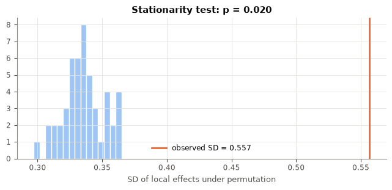
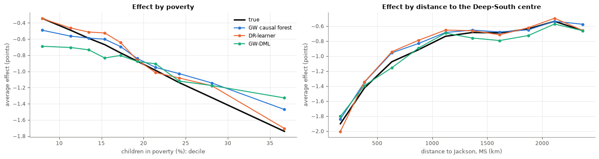

This notebook maps the county-level effect of the community-health-worker program. The effect is larger where child poverty is high, and larger in the Deep South. The data are Scenario A without spillovers (y_noint).
The estimators are a DR-learner, geographically weighted double machine learning, and a geographically weighted causal forest. The classes are SpatialDRLearner and GWDML in geolattice.spatial_analysis.spatialcausal.
is larger in poorer counties and in the Deep South. We try to recover this surface, still in the presence of the smooth confounder \(U(s)\). We use the outcome without spillovers (y_noint) because these estimators assume no interference.
Installation. This notebook needs installation option 3 (core, spatial analysis and spatial statistics): pip install "geolattice[statistics]". See “Installation options” in the GeoLattice README.
Code
import warningswarnings.filterwarnings("ignore")import numpy as np, pandas as pd, matplotlib.pyplot as pltimport geolattice.spatial_analysis.spatialcausal as sc, countycausal as cc, tutorial_style as tsts.use()gA, w, truth = cc.scenario_program()X = gA[cc.COVARIATES].to_numpy()xy = cc.coords_km(gA)tau = gA["tau"].to_numpy()data = sc.SpatialCausalData(X, gA["T"], gA["y_noint"], xy, w=w, feature_names=cc.COVARIATES)print(f"true ATE {truth['ate']:.3f}; tau ranges from {tau.min():.2f} to {tau.max():.2f}")
true ATE -0.890; tau ranges from -4.27 to -0.09
The conditional average treatment effect
The CATE is \(\tau(x,s)=\mathbb E[Y(1)-Y(0)\mid X=x,\,s]\). Under unconfoundedness given \((X,s)\) it is identified, but it is a function, estimated with much more noise than an average.
The AIPW pseudo-outcome and the DR-learner
With cross-fitted nuisances \(\hat\mu_t(x,s)=\mathbb E[Y\mid T=t,X,s]\) and \(\hat e(x,s)\), define
If either nuisance is correct, \(\mathbb E[\Gamma_i\mid X_i,s_i]=\tau(X_i,s_i)\). So \(\frac1n\sum_i\Gamma_i\) is the doubly robust ATE, and regressing \(\Gamma\) on effect modifiers gives the DR-learner (Kennedy, 2023), whose error depends only on the product of the two nuisance errors. The catch: \(\Gamma\) is very noisy. Its variance is about that of \(Y\) itself and more than ten times the variance of the signal \(\tau\), so the second stage needs strong smoothing. In SpatialDRLearner the nuisance models see covariates plus the spatial basis (to absorb \(U\)), and the final stage regresses \(\Gamma\) on covariates and coordinates. All CATEs reported below are out-of-fold: a county’s estimate never uses its own outcome.
Code
dr = sc.SpatialDRLearner(spatial_features=("rbf",), cate_features="X+coords", se="conley", cutoff=150).fit(data)print(dr.summary())print(f"variance of the pseudo-outcome: {dr.pseudo_outcome_.var():.2f} of Y: {gA['y_noint'].var():.2f} "f"of the true effect tau: {tau.var():.2f}")
Spatial DR-learner (n=3109, SE: conley)
========================================
estimate se ci_lower ci_upper p_value
effect
ate -0.8286 0.0474 -0.9216 -0.7357 0.0000
propensity_range: (0.025, 0.97)
variance of the pseudo-outcome: 4.38 of Y: 4.74 of the true effect tau: 0.19
Geographically weighted DML
GW-DML keeps the global, spatially cross-fitted residuals of notebook 01, \(\hat u_j=Y_j-\hat\ell(Z_j)\) and \(\hat v_j=T_j-\hat m(Z_j)\), and fits a local residual-on-residual regression around each county. With kernel weights \(K_{ij}=K(d_{ij}/h_i)\) the local estimating equation is
with kernel-weighted means \(\bar u_i,\bar v_i\) (a local intercept). This is a geographically weighted regression of \(\hat u\) on \(\hat v\).
Kernel and bandwidth come from geolattice.spatial_statistics.gwmodel: bisquare \(K(r)=(1-r^2)^2\) for \(r<1\), and an adaptive bandwidth \(h_i\) equal to the distance to the \(k\)-th nearest county. \(k\) is chosen by golden-section search on the leave-one-out error \(\sum_j\big(\hat u_j-\bar u_{(-j)}-\hat\theta_{(-j)}(\hat v_j-\bar v_{(-j)})\big)^2\).
Local standard error (kernel sandwich, treating the residuals as independent): \(\widehat{\operatorname{se}}(\hat\theta_i)=\sqrt{\sum_jK_{ij}^2(\hat v_j-\bar v_i)^2\hat e_{ij}^2}\big/\sum_jK_{ij}(\hat v_j-\bar v_i)^2\), and the effective sample size is \(n_{\text{eff},i}=(\sum_jK_{ij})^2/\sum_jK_{ij}^2\).
What it estimates. As with the global PLM, \(\theta_i\) is a local overlap-weighted average of \(\tau\) in the kernel neighbourhood, and smoothing biases it toward neighbouring values.
Stationarity test. Is there spatial variation at all? The statistic is the SD of the \(\hat\theta_i\). Under \(H_0\) (constant effect) the residual pairs \((\hat u_j,\hat v_j)\) are exchangeable across locations, so permuting them gives the null distribution (cf. Brunsdon, Fotheringham & Charlton, 1998).
stat, pval, null = gw.stationarity_test(n_perm=49)fig, ax = plt.subplots(figsize=(6.5, 3.2))ax.hist(null, bins=15, color="#9ec5f4", edgecolor="white")ax.axvline(stat, color=ts.ORANGE, lw=2, label=f"observed SD = {stat:.3f}")ax.set_xlabel("SD of local effects under permutation"); ax.set_title(f"Stationarity test: p = {pval:.3f}")ax.legend(); plt.tight_layout()

The geographically weighted causal forest
Local regression of \(\hat u\) on \(\hat v\) is linear and only uses location. The GW causal forest lets the effect also vary with covariates, nonlinearly:
Compute cross-fitted AIPW pseudo-outcomes \(\Gamma_i\) (as for the DR-learner).
Place \(K=50\) calibration knots (k-means of county centroids). At knot \(k\) fit a random forest of \(\Gamma\) on covariates with sample weights \(K(d_{jk}/h_k)\) (the same geolattice.spatial_statistics kernel).
Each county uses its nearest knot’s forest, blended with a global forest: \(\hat\tau_i=\lambda\,\hat\tau^{\text{local}}_i+(1-\lambda)\,\hat\tau^{\text{global}}_i\) (the geographical random forest idea of Georganos et al., 2021).
All predictions are out-of-bag, and \(\lambda\) and the leaf size are chosen by out-of-bag error (leaf size matters a great deal because \(\Gamma\) is so noisy).
The bandwidth is chosen as the scale at which a kernel-weighted mean of \(\Gamma\) best predicts held-out values. That smoothed mean is itself reported as a local ATE map with a kernel sandwich SE, \(\hat\tau^{\text{loc}}_i=\sum_jK_{ij}\Gamma_j/\sum_jK_{ij}\). This step uses the geolattice.spatial_statistics.gwmodel kernels; engine="spatialstats" would instead run geolattice.spatial_statistics.gwmodel.ensemble.GWRandomForest with one local forest per county.
The forests recover both drivers of heterogeneity (poverty and the Deep-South bump). GW-DML captures the regional pattern, but the CV-selected bandwidth is small (about 20 effective counties per neighbourhood), so local estimates are noisy and a few with almost no local treatment variation are extreme (the minimum is below −10, with a standard error above 5). It also cannot express the within-region poverty gradient, because it uses location only. A larger bandwidth trades this variance for more smoothing bias.
How do the estimates relate to the two true drivers? Averaging the CATE estimates within bins of child poverty and of distance to Jackson, MS:
Code
jack = xy[(gA.state_abbr =="MS").to_numpy() & (gA.county =="Hinds").to_numpy()][0]dist = np.sqrt(((xy - jack) **2).sum(1))df = pd.DataFrame({"poverty": gA.child_poverty_pct, "dist": dist, "true": tau, "GW causal forest": cf.cate_,"DR-learner": dr.cate_, "GW-DML": gw.local_effects_["theta"].to_numpy()})fig, ax = plt.subplots(1, 2, figsize=(14, 3.8))for a, (col, bins, lab) inzip(ax, [("poverty", np.quantile(df.poverty, np.linspace(0, 1, 11)), "children in poverty (%): decile"), ("dist", np.linspace(0, 2500, 11), "distance to Jackson, MS (km)")]): g = df.groupby(pd.cut(df[col], bins, include_lowest=True), observed=True).mean(numeric_only=True)for name, color in [("true", ts.TRUTH), ("GW causal forest", ts.BLUE), ("DR-learner", ts.ORANGE), ("GW-DML", ts.AQUA)]: a.plot(g[col], g[name], "o-"if name !="true"else"-", color=color, label=name, ms=4, lw=2.4if name =="true"else1.6) a.set_xlabel(lab); a.set_ylabel("average effect (points)")ax[0].legend(); ax[0].set_title("Effect by poverty"); ax[1].set_title("Effect by distance to the Deep-South centre")plt.tight_layout()

Using CATEs: targeting a limited budget
Suppose the budget covers 20% of counties. Ranking counties by estimated effect and treating the top fifth targets those predicted to benefit most. We compare the true average effect in the targeted counties with random allocation and with oracle targeting by the true \(\tau\).
Code
k =int(0.2*len(tau))def gain(est): pick = np.argsort(est)[:k] # most negative = largest reduction in diabetesreturn tau[pick].mean()tgt = pd.Series({"random allocation": tau.mean(), "DR-learner": gain(dr.cate_), "GW-DML": gain(gw.local_effects_["theta"].to_numpy()),"GW causal forest": gain(cf.cate_), "oracle (true tau)": gain(tau)}, name="true mean effect in the 20% targeted counties")tgt.round(3).to_frame()
true mean effect in the 20% targeted counties
random allocation
-0.890
DR-learner
-1.462
GW-DML
-1.366
GW causal forest
-1.510
oracle (true tau)
-1.572
Summary and Conclusions
CATE estimation is much harder than ATE estimation: pseudo-outcomes are noisy, so methods need heavy smoothing, and honest (out-of-fold / out-of-bag) predictions are the only fair basis for comparison.
GW-DML answers “where?”, with local SEs and a test of whether the effect varies at all. It cannot see covariate-driven heterogeneity, and pointwise intervals are not a joint band.
The GW causal forest combines location and covariates and recovers both drivers here.
Even imperfect CATEs can be useful for targeting. The relevant measure is the true benefit in the selected counties, not the accuracy of each county’s estimate.
Resources
Papers
Reference
Notes
Kennedy (2023)
DR-learner: second-stage regression of the AIPW pseudo-outcome
Brunsdon, Fotheringham & Charlton (1998)
Geographically weighted regression; permutation test of stationarity
Georganos et al. (2021)
Geographical random forests: blend a local forest with a global one
In this library
Object
Role
SpatialDRLearner
Cross-fitted DR-learner with a spatial basis in the nuisance models
GWDML
Local residual-on-residual regression, bandwidth search, stationarity test
GW causal forest
Kernel-weighted forests of the pseudo-outcome at calibration knots